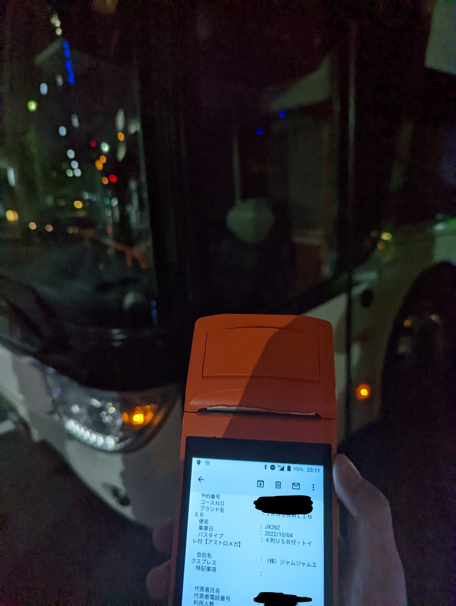
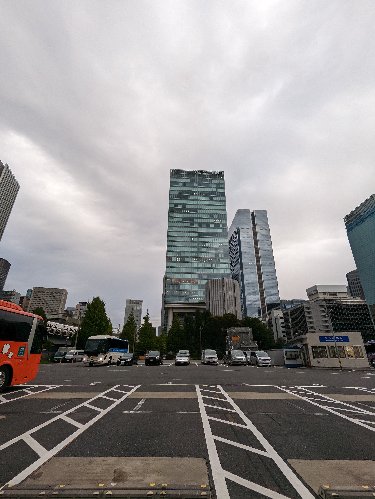
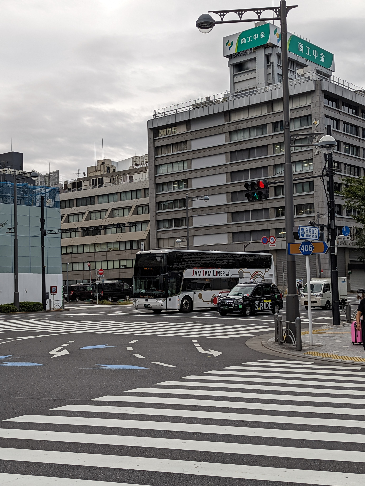

今年は初めてDroidKaigi 2022に参加した。これまでミーティングは一回しか行ったことがなく、発表するわけでもないのに緊張した。本稿はその体験を書き残すことを目的とする。最後まで読んでいただけると幸いだ。
まずDroidKaigiが行われる東京へ移動する。バスは大阪駅から少し離れたところ(NU茶屋町)から発車した。私はバスに乗ると寝れないが翌日以降に影響が出ると困るので大阪駅前のドンキホーテでChillOut(と衝動買いしたチプカシ)を持ってバスに乗車した。アメニティのアイマスクも手伝って、よく眠ることができた。
バスで揺られること約8時間、東京に到着した。以前バスを下車する時に財布を落として大変なことになって記憶があるので目視とAirTagの両方で確認し、細心の注意を払いながら下車する。到着したものの、開会まで少し時間があったので宿泊先に行って荷物を整理し、シャワーを浴びた。
 一休みした後、宿泊先を後にしDroidKaigiの開催される会場に急いだ。東京の地下鉄には慣れておらず、反対の方向に進んでしまったがなんとか間に合うことができた。
Welcome Talkの際、DroidKaigi2022の公式アプリに多くのContributorが参加した旨紹介があり、自分のアイコンを見つけた時は正直目頭が熱くなるものがあった。
その後多くの企業ブースを見たり、発表を聞いたりして、「ああ、これがカンファレンスなんだ。」と感じた。
今回のDroidKaigiの中で一番見たかった講演だ。知っているようで全く知らないAndroidの仕組みやビルド環境のことを知れて非常に楽しかった。
この日は全Android開発者待望のGoogleオリジナルスマートウォッチ、Pixel Watchの発表二日前ということで、会場は大盛り上がりだった。サムネイルにもあるとおり、「Wearアプリは開発より規格の方が難しい」という言葉が一番心に残った。
普段何気なく使っているスマートフォンの裏側を少しだけみることができた。開発者が参加するCTS-dによってハイエンドにも関わらず、CellBroadCastなどのAndroidとして当然のことができないメーカーやUXを無視してまで執拗にタスクキルをするメーカーがあるが、そのようなメーカーに適切な措置が取られればと感じた。
発表後にスピーカーの人との会話をするコーナーがあり、そこで発表内容+αで様々な話ができたことがオフライン参加してよかったなと感じたことだ。
Android開発以外のディープな話題ができ、これもまた非常に楽しかった。画像の掲載はやめておくが、自分以外にもSUNMI V1sユーザーがいることを知り嬉しくなった。後述するがSUNMI V1sを活用した名刺システムを開発しようと強く決心したのもこの会場だ。
付属品以外にも360度カメラまでついてて¥12,800だったし子供の頃から憧れてたので...
先述した通りSUNMI V1sを活用した名刺システムを開発する。といっても人様の作ったものをFolkするだけだが。初めてのReact NativeとTypeScriptに戸惑いながらも二日目になんとか間に合わせることができた。
Hamachi-geek/sunmi-namecard-printer二日目はひたすら講演と企業ブースに徹した。昨日回り切れなかった企業ブースを周り、スタンプラリーを埋めた。
そこで手に入れた特大マウスパッドは自宅の机でテーブルクロスのように使っている。この他にもタンブラーやコースターなど、生活に役立つものを多くいただけて感謝している。
通知を実装するようなアプリケーションを開発したことはなかったが、この発表を通じてどのように実装するかや実装する際に何を考えるべきかがわかり、今後の糧にしていきたいと感じた。
私も普段LINEのアプリケーションを使用するが、「あ、ここEdge-to-Edge実装してるな。」と自分のものの見方が変化した。それまでEdge-to-Edgeとは何か知らなかったが、この発表を通してしることができ、非常に感謝している。
ポッドキャストアプリや音楽アプリなど、今やスマートフォンと音は切っても切れない関係だが、その裏にあるものと発表後のAsk the Speakerのコーナーでは古のAndroidの話をさせていただき、Androidの進化を再確認することもできた。
この日はひたすら作業だ。これまでまともに触れてこなかったJetPack Composeに触れることができ、視野が広がった。
同じデスクの方々に助けていただけたのも非常にありがたかった。
またまさかお会いできると思ってもなかったお方とお話やお写真を撮らせていただくことができ、自分にとってある意味今回一番のサプライズとなった。
今回は初めてDroidKaigiに参加させていただいたが、得たものが非常に多いと感じる。